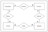

1:1
- An employee belongs to at least 1 department and at most 1 department.
- A department can have at least 1 employee and at most n employees.
Professor: Cainã


1:1
1:N
Creation of the table
Comandos DDL - Data Definition Language
Comandos DML - Data Manipulation Language
Comandos DQL - Data Query Language
Comandos DTL - Data Trasaction Language
Linguagem de Transação de Dados.
São os comandos para controle de transação.
Flexibility in data model:
Horizontal scalability:
Types of NoSQL databases:
Flexibility and performance:
Flexibility in data model:
Usage across various industries:
Complementary to relational databases: